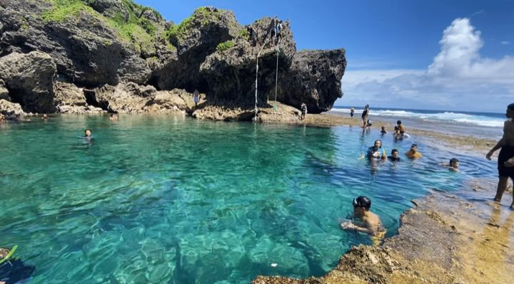
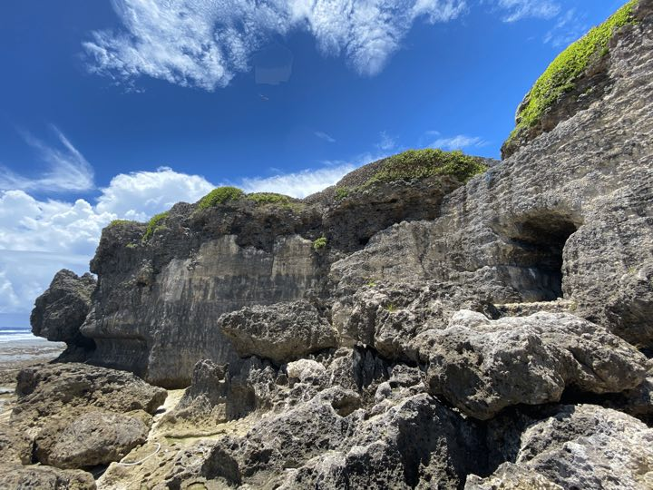

沖縄 2026
10月10日 – 10月12日 · ジムニー・ルーフトップテント
1010月土
到着那覇 → 金武 → 名護
- 06:10羽田 → 那覇 — ソラシドエア SNA 021座席 14B · 航空券番号 2052520018908
- 08:55那覇空港（OKA）着
- 09:40空港から路線バス111番／117番1人¥1,330 · 高速経由で約1時間
- 10:45沖縄北ICで下車徒歩10分、または希望すれば無料送迎
- 11:00ジムニー受け取り — 沖縄市池原営業所 9:30–18:00 · 荷物預かりあり
- 11:55キングタコス金武町 — タコライス営業所から26分 · タコライスは1984年に金武町で誕生
- 13:05万座毛金武町から19分 · 象の鼻の形の岩
- 14:45フンガー滝（名護市真喜屋）万座毛から53分 · 奥は携帯の電波なし · 現地の注意書きを確認
- 16:05名護 — 食料の買い出し滝から19分 · マックスバリュ、24時間営業
- 16:50キャンプ — 屋我地か古宇利名護から12分 · ショップから35分
- 18:08夕日
- 19:00バーベキュー — Evertrailのセット
1110月日
シュノーケリングの日水納島、大家、かき氷
- 06:25朝日、テント撤収
- 07:20キャンプ場を出発ショップまで35分
- 08:00瀬底島のDIVENUTSに集合着替えてショップの車で港へ · 説明のあと出港
- 09:001本目 — 水納島か瀬底島浅場のサンゴ礁 · 海水温 29 °C
- 10:302本目のポイントへ追加シュノーケル、または船上で休憩
- 12:00港に帰着ショップでシャワーと着替え · 写真付き
- 13:10百年古家 大家（名護市）— あぐー肉とゆし豆腐そばショップから23分 · 昼は15:30まで、L.O. 15:00
- 14:30おきなわみるくふぁーむカフェ — かき氷大家から6分 · 12:00–18:00
- 15:30名護 — 今夜の肉カフェから2分 · マックスバリュ
- 16:20キャンプ場へ戻る名護から12分
- 18:07夕日
- 19:00バーベキュー — 今日買った肉
1210月月
西海岸、出発残波岬、崖のカフェ、秘境プール、バス
- 06:25朝日、撤収
- 07:30テント撤収
- 09:15残波岬キャンプ場から72分 · 隆起サンゴの断崖2 km
- 10:15瀬名波ビーチ管理なし · 設備なし
- 11:00バンタカフェ（読谷村）— 岩場で昼食瀬名波から6分 · 海岸線に屋外160席 · 08:00開店
- 12:20糸満へ南下カフェから76分
- 13:50具志川城跡 — 秘境プール干潮14:53 · 崖を下る · 入場無料
- 15:30プールを出発Evertrail営業所まで56分
- 16:20給油、営業所の手前で
- 16:45ジムニー返却 — 沖縄市のEvertrail営業所空港ではありません · 営業所は18:00まで
- 17:05沖縄北ICまで徒歩10分、または営業所の無料送迎
- 17:20路線バス111番／117番で那覇空港へ1人¥1,330 · 高速経由で約1時間
- 18:25那覇空港着
- 18:45チェックイン
- 20:25那覇 → 羽田 — ソラシドエア SNA 026座席 14B
- 22:50羽田着
移動と手配
フライトソラシドエア · 予約番号 F9NE38
- 予約番号 F9NE38 · 航空券番号 2052520018908Waylon Huang · 羽田 ↔ 那覇、時刻はすべて日本時間
- 06:10発なので、自宅を04:00頃に出発します
ジムニーEvertrail · 予約番号 #260096
スズキ・ジムニーシエラ II、ルーフトップテント、2名。受け取りも返却も同じ場所 — 沖縄市池原のEvertrail営業所で、空港ではありません。空港バスは往復 — 1日目に行き、3日目に帰り。
- あぐー豚 200 g · 沖縄県産牛 200 g
- あぐーソーセージ2本 · 焼き鳥4本
- ガスカートリッジ · 焼肉鉄板グリル2人分の夕食1回
- マスク・シュノーケル・フィン
- 蚊取り線香
- 日本の運転免許証で可国際運転免許証は不要
- 営業所：沖縄市池原2-11-79:30–18:00 · 080 9104 3373 · 駐車場・荷物預かり
- 1日目・行き：空港から路線バス111番／117番、沖縄北ICで下車1人¥1,330 · 約1時間 · 乗車時に支払い · そこから徒歩10分、または無料送迎
- 3日目・帰り：同じ経路を逆に18:00までに営業所で返却、ICまで10分、バスで空港 · 1人¥1,330 · 約1時間
- バス代は2人往復で合計¥5,320
- バスが厳しければ空港送迎2人で片道¥10,000 · 10:30–16:00なので、プールのあとの帰りには使えません
- 車両の引き上げ → 未使用日数を100%返金
- ルーフトップテントが使用不可 → 該当日ごとに30%返金
- フライトの遅延・欠航 → 変更手数料は免除
- キャンプ用品は車両保険の対象外
シュノーケリング — DIVENUTS瀬底島・本部町 · 2日目

瀬底島発のボートシュノーケル、午前便。水納島と瀬底島の浅いサンゴ礁。器材レンタル代込み、 水中写真付き。ノンダイバー対象。
- 08:00ショップ集合着替えてショップの車で港へ · 説明のあと出港
- 09:001本目のポイント到着
- 10:001本目終了、船上で休憩
- 10:302本目のポイントへ移動追加シュノーケル、または船上で休憩
- 11:302本目終了、帰港
- 12:00港に到着ショップでシャワーと着替え
- 12:15集合 · 13:15ポイント着 · 14:15終了 · 14:45港着
- 水納島と瀬底島浅場一面のサンゴ礁 · サンゴが多く魚が群れるポイントへ案内
- 水着、サンダル、日焼け止め
- 酔い止め酔うかわからない人も飲んだほうがよい、とショップの案内
- ビーチ体験ダイビング — ¥13,200約3時間
- ボート体験ダイビング — ¥13,750約3時間30分
- ボート体験ダイビング＆ボートシュノーケルセット — ¥18,700約5時間 · シュノーケルを追加ダイブに変更 +¥2,200
- サンセットボートシュノーケル — ¥14,300約2時間
- 本部町瀬底1278 · 09:00–19:00シャワー、バスタオル、アメニティあり
- 電話対応は休止中 — メールかLINEinfo@divenuts.jp · 当日の夕方か翌日に返信
- 水中の写真と動画は無料
- キャンセル料 3日前30% / 前日50% / 当日100%台風や悪海況で中止の場合は不要
出発前に知っておくこと天気、通行料、危険生物
泳げる海、夜間は 24 °C前後。にわか雨は短時間、吹きさらしのサイトでの主なリスクは風。10月は台風シーズン — 3日間で300 km以内を通る確率は約10分の1。
- 沖縄自動車道、那覇IC ↔ 許田IC57 km · ETC ¥1,040、現金¥1,610 · 割引はETC限定
- 国道58号、海沿いの代替ルート名護まで約2倍の所要時間
- 左側通行 · ラッシュ時の那覇中心部はバス専用レーン
- ハブ — 夜行性、9–11月に活発日没後はライト、足を覆う靴、石垣と草むらを避ける。攻撃範囲1.5 m。咬まれたら動かず119番、緊縛なし、切開なし
- クラゲ — ネットなし、監視員なしゴリラチョップと具志川城跡のタイドプールは監視なし。長袖ラッシュガード
- 刺されたら海水で洗う — 真水は絶対に使わない食酢はハブクラゲのみ。カツオノエボシ — 青い浮き袋、長い青い触手 — には食酢は逆効果。触手はピンセットで除去し、冷却
- ムカデは靴やテントに入る靴は振って確認、テントは閉めて��く
- 直火も、砂浜での炭の使用も不可多くのキャンプ場で焚き火台が必須
- 水道水は飲用可5–10 L持参 — 野営地に水道がないことも多い
- 名護より北のスーパーは19:00頃閉店国頭村・大宜味村にはなし · 国道58号沿いに24時間コンビニ
- 沖縄そば店は現金のみが多い
- 10月12日（月）はスポーツの日三連休 · キャンプ場は事前予約
- フンガー滝は管理された観光地ではない地元の事業者がマップ登録の削除を公開で求めています — 環境保全と安全管理は集落の負担。掲示を読み、ゴミは持ち帰り
周辺
具志川城跡の秘境プール糸満市喜屋武 · 3日目

具志川城跡の崖下、隆起サンゴの岩のくぼみに引き潮が海水を残してできるタイドプール。 崖を下り、岩場を歩いて到達。魚とカニがいて、見た目より深く、上の岩から飛び込む人もいます。
- 駐車は具志川城跡 — Googleマップに載っています県道3号から平坦な入口
- 石垣を過ぎて海の方へ、そのあと階段を下りる途中でパノラマが開けます
- そこから崖、見た目より急上から細い紐が一本下がっています — 筆者は紐に頼らず脚で下りたとのこと
- プールまではゴツゴツした苔の岩場水たまりのある側を歩く。乾いた苔が滑るところ

- 足を保護できる靴、ビーチサンダルは不可筆者が明記しています
- マスクとシュノーケルプールに魚とカニ
- プールは干潮前後にしか現れない2026年10月12日の那覇：干潮02:33と14:53、満潮08:50と20:31
- トイレ・シャワー・監視員なし
- 2020年に立ち入り禁止となり、記事に解除日の記載はありません行く前に現在の告知を確認
- この海岸のゴミ放置が問題になっていますゴミはすべて持ち帰り
- 喜屋武岬は500 m先記事では辺戸岬と書かれていますが、辺戸岬は100 km北の本島最北端
- 琉球温泉 龍神の湯（瀬長島）6:00–24:00 · 約¥1,570 · プールから23分 — ただし返却は沖縄市で、温泉から41分北。18:00の営業所閉店前には入れません
百年古家 大家名護市
おきなわみるくふぁーむカフェ名護市
名護市の牧場カフェ。自家製フルーツソースのかき氷と黒糖ミルクぜんざい。
- 3日間とも営業 · 2日目、大家から6分
- ほかに黒糖ミルクぜんざい、パステル・デ・ナタ、アイスクリーム
- 1人¥1,000以下 · 080-6497-3690 · 大家から6分
かき氷・ぜんざい7軒 · 10月10–12日営業
- 新垣ぜんざい屋（本部町）· 2日目氷ぜんざい¥350 · 12:00–18:00 · 売り切れあり
- きしもと食堂（本部町）1905年創業の沖縄そば · 11:00–17:30 · 現金のみ
- ひがし食堂（名護市）· 1日目ミルクぜんざい¥480 · 11:00–18:30 · 駐車3台
- 三矢 道の駅許田店 · 1日目サーターアンダギー¥150 · 09:00–19:00
- 琉冰 おんなの駅 · 1日目か3日目マンゴー氷山 · 10:00–19:00 · 無料駐車104台
- 鶴亀堂ぜんざい（読谷村）· 3日目紅イモ黒糖ぜんざい · 11:00–17:00 · 火・水定休
- 氷ヲ刻メ（北谷町）· 3日目塩キャラメルグラノーラ¥800 · 12席 · 売り切れあり

バンタカフェ読谷村 · 3日目
星野リゾートが読谷村の海岸線に建てたカフェ。岩場に屋外160席、芝生、風の日の屋内席。 軽い洋食、ジェラート、紅芋シェイク。
- 読谷村儀間560 · 098-921-6810
- トランジットカフェ（北谷町）2階から海を一望 · 4.4 · ¥1,000–2,000 · 22:00まで
- 瀬長島ウミカジテラス（豊見城市）海に向かう白い階段状のカフェ街 · 10:00–21:00 · 秘境プールから22分、空港まであと11分
自然9か所
- 比地大滝（国頭村）片道1.5 km · つり橋
- ター滝（大宜味村）歩いてすぐ · 滝壺
- カヤウチバンタ（国頭村）河口を見下ろす断崖
- 辺戸岬（国頭村）本島最北端 · 本部から90分
- ゴリラチョップ（本部町）ビーチエントリーのリーフ · 穏やかで浅い
- 屋我地のマングローブ東村ふれあいヒルギ公園の木道かカヌー
- ダイヤモンドビーチ（恩納村）ウミガメ、マダラトビエイ · 穏やかな海
- 古宇利島一周徒歩約1時間
- 備瀬のフクギ並木（本部町）2万本の木の下の砂道、ビーチまで
地図
実際の道路に沿ったルート。●立ち寄り先、■キャンプ場、▲自然、◆食べる。立ち寄り先をタップすると、そこが現在地。
- 08:55那覇空港
- 10:45沖縄北IC
- 11:00Evertrail営業所
- 11:55キングタコス金武
- 13:05万座毛
- 14:45フンガー滝
- 16:05名護 買い出し
- 16:50キャンプ 屋我地
- 06:25キャンプ 屋我地
- 08:00DIVENUTS 瀬底
- 09:00水納島 シュノーケル
- 13:10百年古家 大家
- 14:30みるくふぁーむカフェ
- 15:30名護 買い出し
- 16:20キャンプ 屋我地
- 07:30キャンプ 屋我地
- 09:15残波岬
- 10:15瀬名波ビーチ
- 11:00バンタカフェ
- 13:50具志川城跡 秘境プール
- 16:45Evertrail営業所 返却
- 17:05沖縄北IC
- 18:25那覇空港
キャンプ場
Evertrail のディレクトリに載る、車で行けるキャンプ場のすべて — 全26か所を、車を受け取る沖縄市の Evertrail営業所からの所要時間順に並べています。料金が明記されているのは2か所だけなので、 「記載なし」は無料ではなく不明と考えてください。有料キャンプ場は必ず予約を — 10月10–12日はスポーツの日の三連休です。
勝連ビーチ野営地 · うるま市

沖縄県民の森有料キャンプ場 · 恩納村

幸喜（こうき）の野営地野営地 · 名護市

名護城橋の野営地野営地 · 名護市

NEOSアウトドアパーク有料キャンプ場 · 南城市

ビーチ直結の管理されたパーク。オートキャンプ、カヤックとSUPのレンタル。
あざまサンサンビーチ キャンプ場有料キャンプ場 · 南城市

刈り込まれた芝、久高島からの朝日。トイレ、シャワー、東屋6棟。
北名城ビーチ野営地 · 糸満市

久手堅ビーチ野営地 · 南城市

ベースキャンプ有料キャンプ場 · 名護市

屋我地ビーチ キャンプ場有料キャンプ場 · 名護市

オートキャンプとバンガロー。バーベキュー設備、ボートとカヤックのレンタル。
稲嶺の野営地野営地 · 名護市

屋我地島の野営地野営地 · 名護市

平南橋野営地 · 大宜味村

日陰あり、夕日側、古宇利大橋の正面。潮位線から離れて駐車。
やんばる国立公園内 — 掲示の火気ルールを確認
マップで開く
津波ビーチの野営地野営地 · 大宜味村

渡野喜屋キャンプ場有料キャンプ場 · 大宜味村

トイレ、シャワー、グリル、焚き火場。
やんばる国立公園内 — 掲示の火気ルールを確認
マップで開く
古宇利島キャンプ場有料キャンプ場 · 今帰仁村

大保川キャンプ場野営地 · 大宜味村

福地川海浜公園有料キャンプ場 · 東村

ビーチサイド・川沿い・VIPの区画。マリンスポーツ可。
やんばる国立公園内 — 掲示の火気ルールを確認
マップで開く
コキョウノビーチ野営地 · 国頭村

無料、夕日側。トイレとシャワーも無料。週末は日帰り客と共用。
やんばる国立公園内 — 掲示の火気ルールを確認
マップで開く
辺土名の野営地野営地 · 国頭村

奥間の山あい有料キャンプ場 · 国頭村

星空。トイレ、シャワー、炊事場。
やんばる国立公園内 — 掲示の火気ルールを確認
マップで開く
辺野喜の野営地野営地 · 国頭村

やんばる学びの森有料キャンプ場 · 国頭村

安波（やんばる）野営地 · 国頭村

海の眺め、朝日、暗い夜空。トイレ・シャワーなし。
やんばる国立公園内 — 掲示の火気ルールを確認
マップで開く
奥のビーチロード野営地 · 国頭村

北東海岸、辺戸岬の南3 kmの日陰の区画。裾礁。
やんばる国立公園内 — 掲示の火気ルールを確認
マップで開く
アダンビーチ キャンプ場有料キャンプ場 · 国頭村

辺戸岬から10分の人の少ない湾。駐車場、シャワー。林道経由でアクセス。
やんばる国立公園内 — 掲示の火気ルールを確認
マップで開く条件に合うキャンプ場はありません。
持ち物
ひとりバックパック1つ。寝具とバーベキューセットはレンタルに付いてくるので、ここにあるのは持参する物と 現地で買う物だけ。行をタップするとチェックが付き、リスト編集で内容を変えられます。